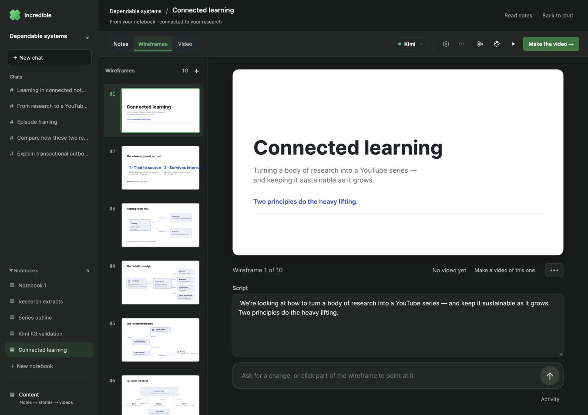
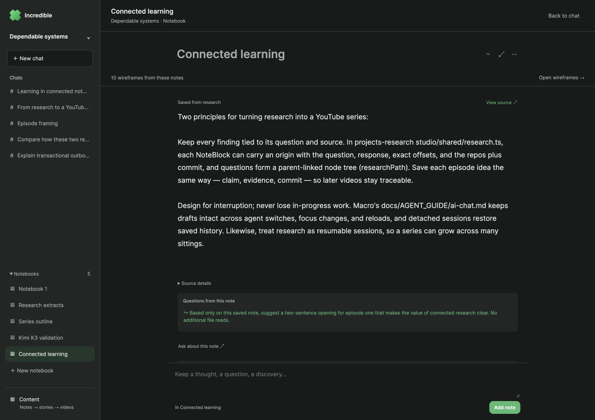
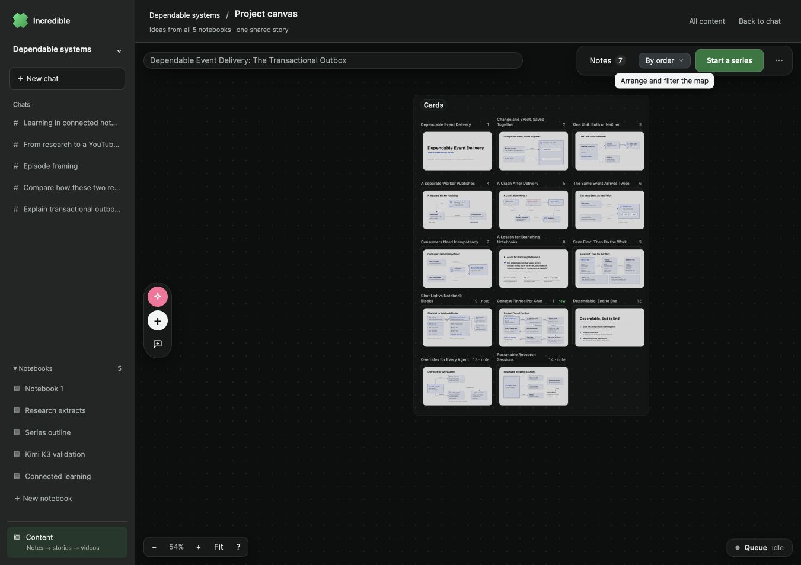
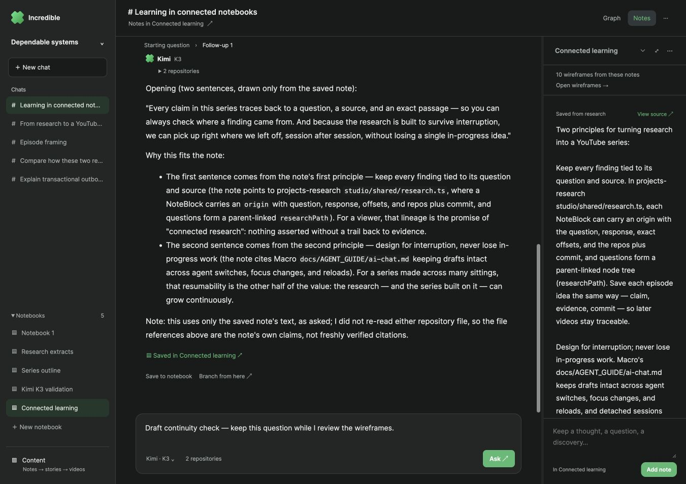
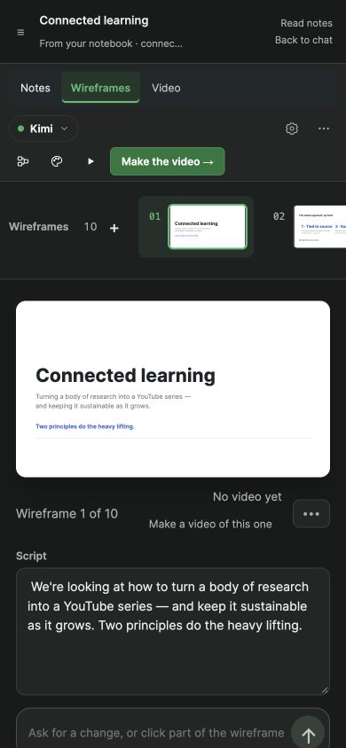
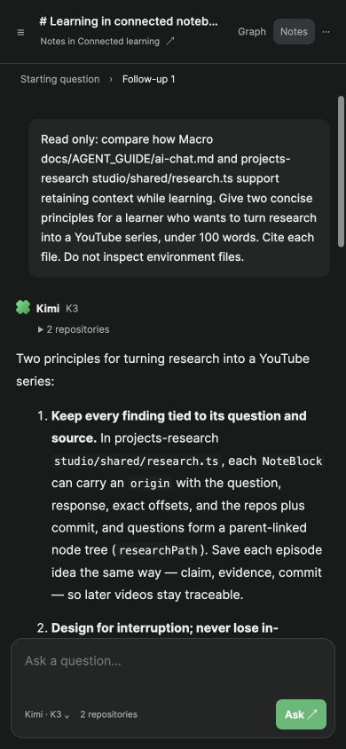

One coherent project workspace
Visible-browser verification on the isolated stack at 127.0.0.1:4291, 17 October 2026. The screenshots show actual product state using existing Kimi K3-generated research and wireframes. Numbered HTML overlays annotate unmodified screenshots.
This pass verified navigation, retained context, drafts, reading position, video setup, and responsive layout. It did not generate a new video or publish to YouTube.
Wireframes stay inside the project

1
2
3
- The same chats and notebooks remain available in the sidebar.
- The project and notebook identify the current output. Notes, wireframes and video are stages of this notebook.
- Return to the originating chat and question without restarting the workspace.
One notebook, with connected outputs

1
2
3
- Opening a notebook from navigation gives it a focused reading view.
- Generated wireframes are directly accessible from the notes that produced them.
- Saved excerpts retain their source and follow-up question links.
One shared project canvas

1
2
3
- The canvas explicitly belongs to the project and combines all five notebooks.
- Project navigation stays present while arranging the story.
- Return to content or the originating chat with its research context intact.
Return without losing work

1
2
- The unsent test draft survived the detour. It was cleared after verification.
- The transcript returned to the exact previous scroll position: 787 px before and after. The selected chat, question and notebook remained in the URL.
The same workspace on a phone

1
2
- Project navigation is available in a drawer; the notebook remains named in the header.
- The video action is readable at 390 px, with no horizontal page overflow.
Back to chat reveals the conversation

1
- Returning from an output closes the covering notebook pane on a phone. The conversation and composer are visible.